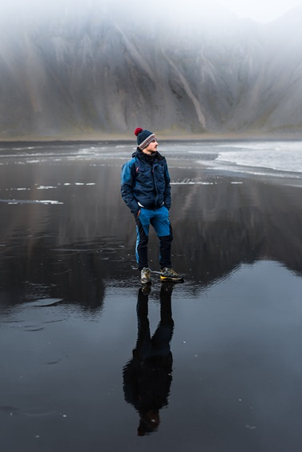

<section class="about-section text-center" id="about">
  <div class="container px-4 px-lg-5">
    <div class="row gx-4 gx-lg-5 justify-content-center">
      <div class="col-lg-6 pt-5">
        <h2 class="text-white mb-4">Who am I ?</h2>
        <p class="text-white-50">
            After 8 years of work in medical laboratories in hospitals (Hospices civils de Lyon, Fleyriat, Hôpitaux Nord Ouest de Villefranche),
            domain that taught me rigor, organization and adaptability. During my last position as a laboratory technician, I had the opportunity to work on important computer projects
            including the implementation of a laboratory management software (GLIMS).
        </p>
        <p class="text-white-50">
          Today in professional retraining, I am in training at
          <a href="https://www.ecole-isitech.com/">ISITECH</a>
          in alternation with the company
          <a href="https://www.spendhq.com/resources/notre-nouveau-site-www-spendhq-com-arrive-tres-bientot-en-francais/">Per-Angusta</a>
          as a full-stack Ruby on Rails developer.
        </p>
      </div>
      <div class="col-lg-6">
        
      </div>
    </div>
    <div class="row gx-4 gx-lg-5 justify-content-center what-i-like">
      <div class="col-lg-6">
        
      </div>
      <div class="col-lg-6 pt-5">
        <h2 class="text-white mb-4">What do I like ?</h2>
        <p class="text-white-50">
          I appreciate learning continuously, I am curious and like to be cerebrally stimulated, that's why I greatly appreciate development,
          a constantly expanding and changing field requiring adaptation and curiosity.
        </p>
      </div>
    </div>
  </div>
</section>
